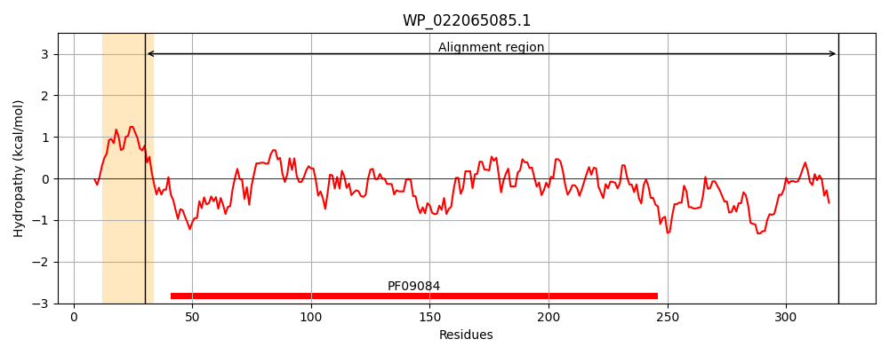
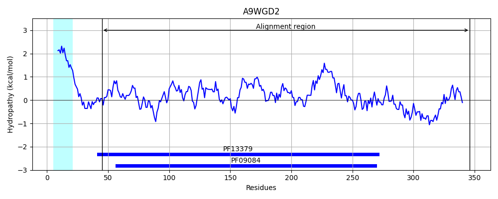
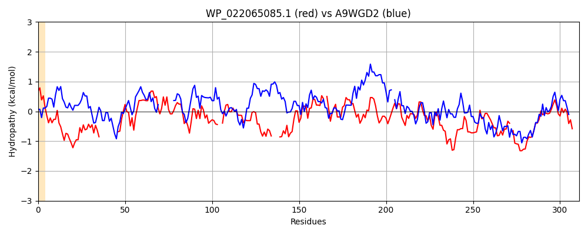

Hit Accession: A9WGD2
Hit TCID: 3.A.1.17.14
Hit Description: gnl|BL_ORD_ID|981 gnl|TC-DB|A9WGD2|3.A.1.17.14 Riboflavin-binding protein RibY OS=Chloroflexus aurantiacus (strain ATCC 29366 / DSM 635 / J-10-fl) GN=ribY PE=1 SV=1
Mach Len: 311
e:0.000000
Query TMS Count : 1
Hit TMS Count: 1
TMS-Overlap Score: 0.000000
Predicted Substrates:CHEBI:8843;riboflavin
BLAST Alignment:
Score: 164 , Bit scores: 67 bits, E-value: 8.9e-13, Alignment length: 311, Percentage identity: 24
Query: 30 EKIVLLTSWYAQAEQGGYYQAQATGLYKKYGLDVEI----------RSGGPQVNGMQLLLSKRADVIIGYDLQLLEGIQRGFQAKAIAAPFQYDPQGLLTHADV--TSLQGLKDKTLLVSSSGQATWWPWLKAQY----QLSDAQVRPYTFNIQPFVVDDAVAQQ-AYVSSEVFQVQKAGVKANFFLFSEHGYPPYGGILIARPDTIAERKAAMAKFVRASMEGWVSYLKDPAPGNALIKQDNPKMTDDLLAWGVTQIREHHLIDGGDAASQ-GWGTMTDARWQKTRDFMVSTGLLAAATDWKQAYTTEFV 322
+++ L S+ + YY A A G Y G++V R+ +G+ + V++ Q+G K + +Q P ++V S+ L+ +T+ + +++ L A Y +D V+ F V++D V Y +E Q++ GV+ N L ++ GI ++ IA+ + KFVRAS+ G L +P L Q P+ L+ ++E + +Q G G W +T +FM + GLL+A D +QA+T EFV
Sbjct: 45 QQVTLAMSYIPNIQFAPYYVAAAKGYYAAEGIEVVFDYNFENDVLQRAATWPTSGVAFATTSGTSVLLAR--------QQGLPVKTVMTLYQRFPIAFFAKSNVPLASVNDLRGQTIGIPGRFGESFYALLAALYAGGMSEADVTVQEIGFTQTAAVMEDKVPVAIGYAMNEPVQLRGQGVEVNVLLAADVFNLAANGIAVSEA-LIAQNPELVRKFVRASLRGLADTLANPDEAFDLSLQFIPEAQLGDLSLQRQVLQESLPFWQNELTAQYGLGYTDGQLWTRTEEFMRAAGLLSAPVDVQQAFTNEFV 346 | Protein Hydropathy Plots: |
|---|
|  |  |
Pairwise Alignment-Hydropathy Plot:
|
|---|
|  |